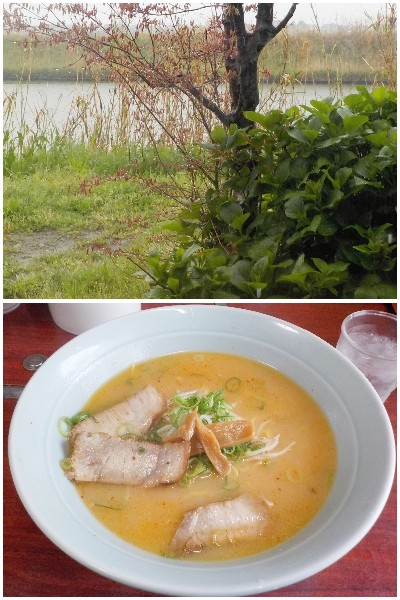

島根県出雲市斐川町学頭1812-42
更新日 : 2026/04/15

人気のお店なので駐車場がいっぱいでしたが、ローテーションがいいみたいですぐに駐車出来ました。
お店は思っていたより広く座敷もありました。新建川とモミジと紫陽花の葉を見ながら食事しました。
味噌ラーメンのスープの色がキレイですね。出汁味がしっかりあり味噌味がマイルドでした。
王道的な黄色いちじれ麺に美味しいスープ。塩味が効いたチャーシューがいいアクセントになっていました。
人によって好みは違うと思いますが、私は満足感が高かったです。
【おいしいものを食べよう。】【たくさん寝よう。】
【ソロ活をしよう!】【季節感のあることをしよう。】【動画視聴はほどほどに。】【当サイトの全てのコンテンツは無断転載禁止です。】